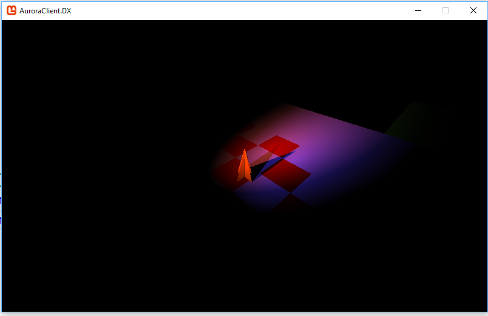

Project Aurora
In the beginning, we decided that we wanted to create some sort of 3D multiplayer game because we had never made a multiplayer game before and Luis had never made a 3D game before.
We thought about what kind of game we could make and chose to try to make a game somewhat based on the social game "Werwolf".
It should have multiple competing teams with hidden roles and some system to make for an interesting fight where roles are slowly uncovered.
At the moment, we mostly just have an "engine" that will later be the basis of all the models and dynamics we add to make a fully fleged game.
While we are not quite sure if we will be able to actually finish the game, we decided that it is more important to overcome new technical challenges instead of spending a lot of time creating beautiful models and compelling textures - after all, this is a computer science, not an art class.
Project Structure
Because of the multiplayer aspect, we created multiple projects that work together:
The first folder (Client) contains everything that is only needed on the client-side:
- AuroraClient.3DRenderer contains functions for the rendering. We seperated it from the rest of the project so that we can reuse it in other 3d games or applications.
- AuroraClient.Shared contains all the client-side code. Shared projects are a cool feature of Visual Studio. They are not compiled directly, instead, their code is automatically inserted into selected projects, in our case AuroraClient.DX. This allows us to use the code from AuroraClient.Shared in multiple other projects. We decided to do this like that because we want to be able to create an OpenGL version for Linux and Mac in the future. The client also contains code for networking and sets up the renderer.
The Server folder contains two projects:
- The AuroraServer.Controller project contains server-specific logic. It is responsible for initializing the connections to the clients and to update certain game logic.
- The AuroraServer.Interface.Console is the server interface. This is a very simple program that simply starts up the server controller and updates it 60 times a second. We decided to separate the interface from the controller so we can, in theory, create different interfaces, e. g. one with a graphical user interface.
The Aurora.GameState contains the state of the game world, e. g. the position of all players. This project is compiled into a DLL (Dynamic Link Library) and then loaded into both the server and the client. This allows us to share the data structures for server and client. However, this still does not mean that the data is automatically synced: Server and Client need to send messages to each other in order to communicate any changes.
Lastly, the TCP folder is responible for the low-level networking. The two projects are compiled into DLLs and used to communicate between server and client. They only contain functions to send messages to certain clients / the server and trigger events whenever a message is received. They are therefore very portable and could easily be used in other projects.
Two projects are not shown in the list. One of them is a website experiment that doesn't really contain anything and the other one contains the "aurora tools". We wanted to use that e. g. to convert models files in a usable format, but so far, we always managed to find a solution out of the box.
Table of contents
1. Networking
1.1 TCP
1.2 Transmitted data
1.3 Future of our data transfer
1.4 Controls
1.5 Collision
2. Rendering
2.1 Matrices
2.3 Lighting
3.4 Shadows
1. Networking
The problems and our solutions to data management
We decided to make a multiplayer game because neither of has had done something with multiplayer before and we felt up for the challenge. Overall the state of the game needs to be transferred between computers so that every player is in the same situation without this taking up so much bandwith that it wouldn't run smoothly.
At the moment our game only transfers the position and the needs (like hunger or thirst) of all players and isn't yet capable of transmitting gamestates such as day/night or game is paused/is running.
This was already quite the challenge, because we never had to convert information into bits and bytes manually before. Usually, it sufficed to assign a variable and the compiler takes care of the low-level commands, but in our case, the TCP protocol (which thankfully was implemented in the .NET framework by default) only allows to send a stream of bytes to another client.
We have a setup where each client has a virtual TCP connection to a singular server that mostly just relays the information that it gets from a client to the other clients.
The server is just a console application:

The serverside TCP class can then (mainly) send data to a specific connected user:
public void send(byte[] bytes, int clientIndex)
{
var length = BitConverter.GetBytes(bytes.Count());
byte[] actualData = new byte[bytes.Count() + length.Count()];
for (int i = 0; i < length.Count(); i++)
actualData[i] = length[i];
for (int i = 0; i < bytes.Count(); i++)
actualData[i + length.Count()] = bytes[i];
clients[clientIndex].Send(actualData);
}This code does not simply send the raw information: First, the length of the message is measured and converted into a byte array (the *var* type is simply a shorthand and the compiler replaces it by the type of the expression after the "=*, which in this case is an array of bytes).
Before the message is sent, the length of the message is placed in front of the message and this combined data is then sent to the client. This is because TCP transmitts all information as one long message. On the receiving end, we have to keep track of how long every message is to know where one message ends and the next one starts. We can also use this simple function to send data to all players:
public void broadcast(byte[] bytes)
{
for (int i = 0; i < clients.Count; i++)
send(bytes, i);
}
We use broadcast to inform other players of actions that a server recived (like moving) and send to send player specific information (like informing a client what player of the playerlist he controls).
1.1The TC protocol
The Transmission Control protocol is a protocol on the basis of IP (Internet Protocol). It handles data transfer to the point that you have to setup a virtual connection using an IP and then you can feed it data that it will transport. The protocol makes sure that all data sent will arrive aswell as making sure that it is in order. The drawback is that delays in transfer can occur when data doesn't arrive leading to lags for a multiplayer game.
In (almost) all online games the UD protocol (User datagram protocol) is used because it doesn't have as much delay. This is because UDP doesn't make sure all data arrives and arrives in order. The disadvantage is that you have to have a nifty system inplace to make sure there are no misunderstandings because of the arriving data.
We *should* have chosen UDP because having (almost) no delay is what you'd want in a multiplayer game, but the complications that would originate from it would be too much for us to handle. This means that we cannot exactly create a Quake clone, but because our game will be slower-paced, it will not be quite as harmful to the user experience.
We simply chose TCP because it is easier to use.
In our game we setup a virtual connection betweeen each client and our server. It is called a virtual connection because the protocol doesn't actually connect wires in a way that we would have a direct line, but instead just sends data packages over the internet so that it acts almost like a real connection. We convert all information (like the position of the player) we want to send into bytes and then send them across the virtual connection to the other side.
This conversion into bytes can look like this:
public static void reportMovement(Vector3 newLocation, Vector2 newRotation)
{
byte[] command = new byte[1 + 4 + 3 * 4 + 2 * 4];
command[0] = 4;
writeBytes(command, BitConverter.GetBytes(ControlsManager.possessedPlayerID), 1);
writeBytes(command, BitConverter.GetBytes(newLocation.X), 5);
writeBytes(command, BitConverter.GetBytes(newLocation.Y), 9);
writeBytes(command, BitConverter.GetBytes(newLocation.Z), 13);
writeBytes(command, BitConverter.GetBytes(newRotation.X), 17);
writeBytes(command, BitConverter.GetBytes(newRotation.Y), 21);
client.send(command);
}
This code constructs a message to move the player. First, an array is created. The length of this array (1 + 4 + 3 * 4 + 2 * 4 = 25) is written is way to help the readability because the composition of the array is easier to understand. We will explain more of the meaning of the bytes in the next chapter.
This is the code of the writeBytes function. It is a simple helper function that writes on short array into another bigger array.
private static void writeBytes(byte[] array, byte[] toBeWritten, int startIndex)
{
for (int i = 0; i < toBeWritten.Length; i++)
{
array[i + startIndex] = toBeWritten[i];
}
}It does not return anything because array in C# are reference types. This means that instead of passing the content of the array as a parameter, only the memory adress is passed on. Therefore the parameter is not a copy, but actually the same array as the command array in the code above.
1.2 Transmitted data
1.2.1 Conversion to bytes
We have created a system to turn the informations we send into bytes that the receiving end can comprehend.
We send different types of information (player movement, change of stats like hunger, etc). To distinguish these, the first byte of a message contains an action identifier that tells the receiver which type of information is transmitted. A player movement, for example, is represented by a 4. This means that we can only have 256 actions, but the system could be expanded easily e. g. by making the action identifier 2 bytes long.
After that we send the actual numbers (in Integer or Floating point form) that the other side has to convert back into numbers so that it can change its variables about what was sent. For example a player sending the server its position after it moved is built up like this: [action identifier(in this case: 4)][X location ( -18.537)][Y location (0.700)][Z location (-10.457)][X rotation(3.734)][Y rotation(-0.489)]. (These numbers were taken from actually running the game, but the values are rounded.)
1.2.2 What we transfer
We use this to transfer the position/rotation and the needs (like hunger or thirst) from the client to the server and we use it to transfer the position of players, what player is controlled, where a new player (that just connected) is and how a the playerNeeds changed.
1.2.3 What the server does
The server sends the position/rotation of a player to all other players when it recieves an update to where the player moved. The server also stores this information in his version of the game state.
If a player wants to connect to the server, the server gives him information where the other players are and which player he is controlling. He also sends a message to all other clients to create another player.
Players all have a unique ID that is snychronized on all clients and the server, so when the server tells everyone to create a new player, he also transmits the unique ID. After that, he only needs to broadcast (send to everyone) the message to move the player with a certain ID and all players know what to do.
If a client receives a message to move it's own player to a new location, it does not always follow that order. If a player moves, he will, shortly thereafter, get the "echo" of his movement from the server back because the server simply sends the "player moved" message to everyone. Before that happens, however, the player will move a bit more because the TCP connection has a delay. If the client would listen to that message, the player would be moved back and movement would be almost impossible.
This is the clientside code when a movement order is received:
int playerID = BitConverter.ToInt32(data, 1);
Vector3 newPosition =
new Vector3(
BitConverter.ToSingle(data, 5), BitConverter.ToSingle(data, 9), BitConverter.ToSingle(data, 13));
Vector2 newRotation =
new Vector2(
BitConverter.ToSingle(data, 17), BitConverter.ToSingle(data, 21)
);
// Always move other players
Player player = PlayerManager.getPlayer(playerID);
if (playerID != ControlsManager.possessedPlayerID)
{
player.position = newPosition;
player.rotation = newRotation;
}
// Only move own player if local position is too far of (otherways, the movement feels very laggy)
else if ((player.position - newPosition).Length() > 2)
{
player.position = newPosition;
}
break;1.3 What needs to be added to the server distibution
Right now the basics are there and you can see each other move around, but crucial parts are still missing. We need to add entites to the game whos position will get transferred, so that weapons and similar things can exist.
At the moment if a player disconnects, other player connected to the server will crash. This can be considered a bug, but in reality we haven't added code removing a player from other players playerlists if someone disonnects.
As explained in the TCP article, UDP (User Datagram Protocol) should be our protocol of choice. But as explained there the complications would be complicated to handle, but if we have spare time at the end(wich we probably wont), we might swap protocols.
1.4 Controls
The basic input for mouse position and keypresses comes from the Monogame framework.
We can use that input almost directly, but because we have a first person view where you can look around we have to do a couple of extra things.
The mouse position we get from the framework is the position on screen. To get the movement of the cursor we reset the mouse position to the center of the screen each tick and look how at much it is offset from that point to get the movement. This is then simply added to the rotation of the camera and of the model to make the character look around.
In our current stage we have a 3rd person camera active, but this is just for testing purposes because it is easier to debug the collision if you see the player.
The movement of the player was also a little tricky, because we want a couple of things:
- The movement to accelerate, we don't just want to set a fixed speed. (It feels way more natural this way)
- The speed to be capped, so that you can't accelerate forever
This is the code we used to calculate the player direction:
Vector2 targetDirection = getTargetDirection();
Vector2 horizontalVelocity = new Vector2(velocity.X, velocity.Z);
Vector2 velocityDifference = targetDirection - horizontalVelocity;
horizontalVelocity += velocityDifference * acceleration * Time.gameElapsedSeconds;
float verticalVelocity = velocity.Y;
verticalVelocity -= 9.81f * Time.gameElapsedSeconds * 0.1f;
velocity = new Vector3(horizontalVelocity.X, verticalVelocity, horizontalVelocity.Y);This works by taking the target direction (which is based on the direction the player is looking in or 0 is the player is not moving) and the current horizontal velocity. The difference is then calculated and added to the current velocity, multiplied by the delta time (Time.gameElapsedSeconds). This multiplication makes sure that the game runs similarly at all framerates (at 60 frames per second, 1/60th of the difference is added to the velocity 60 times a second, at 30 frames per second, 1/30th is added 30 times).
The velocity will asymptotically approach 0, but never reach it, because every frame, the current velocity is only partially moved to the target velocity. This doesn't really concern us because it gets very close to 0 very fast.
The second part of the code takes care of the vertical motion, which is a linearly accelerated motion. We simply substract (because gravity points in negative Y direction in our game) the acceleration, once again multiplied by the elapsed time, from the current velocity. Finally, we combine these velocities into the final velocity vector.
1.5 Collision
The game has to check if a step is "legal" before it is made to make sure that the player can't run through walls. We also have to add gravity, so that the player falls as long as there is no ground beneath he is touching.
This is a rather complicated matter, and we had to find an algorithm that checks if a triangle intersects another triangle that isn't too intense on resources.
We found an algorithm and a C++ implemenation of it both written by Thomas Möller. But because we didn't use C++ but instead C#, we had to convert it, wich turned out rather complicated.
But only having a fast triangle triangle intersection checker is only half of a collision system.
We made a simple model with wich we collide the world consisting of two triangles, wich are used as the player model for now and look like this:

The level that can be seen in the background was made in Blender. By using a mixture of Framework code and our own, we converted the level into a triangle array. This allows us to use if with our custom render, but we can also take the data for collision.
Currently, we simply iterate over all triangles and check the intersection for each one, but this can obviously be optimized by storing the triangles in some kind of grid or an octree and only accessing the relevant part of this structure.
public static bool collides(Triangle triangle, out int collidingTriangleIndex)
{
collidingTriangleIndex = -1;
for (int i = 0; i < drawnMesh.triangles.Count; i++)
if (IntersectionManager.intersect(drawnMesh.triangles[i].physicsTriangle, triangle))
{
collidingTriangleIndex = i;
return true;
}
return false;
}Basically, we loop through the triangles of the world and use the IntersectionManager (which contains our conversion of Möller's algorithm) to check the intersection. The collidingTriangleIndex is a special parameter, a so-called output parameter. The code that collides() inserts a variable there and collides() will put a value in that variable before returning. In this case, we store the index of the colliding triangle or -1 if there is no collision. Currently, we do not use that data, but in the future, we could use it to play different sounds depending on the surface etc.
Each frame, after the velocity is computed, the player is moved in the direction. After that, it is checked whether the player intersects with the world. If he does, he is simply moved back to the starting location.
2. Rendering
In the first part, we discussed how we built a networking system from the ground up. We decided to take a similar approach for the graphics. Instead of using an existing engine that comes with countless features out of the box like Unreal or Unity3D, we wanted to build our rendering technology from the ground up. This means that we had to write everything ourselfs, including calculations for light and shadows.
The following part will mostly focus on how we accomplished the shadows you can see in the game. Here's a screenshot of how it currently looks:
2.0.1 Monogame
Most modern games use either OpenGL or DirectX for rendering. Both of these are very low-level frameworks that provide an interface between the CPU and the GPU (the graphics card). Both of there also are programmed using C++, a language neither of us had ever used.
Because we were both quite comfortable in C#, we looked at ways to interface the GPU with C#. We quickly decided to use Monogame, which is an open-source framework (based on Microsoft's proprietary XNA Game Studio).
We both had 2d experience in it, but almost none in 3d. Monogame is quite low-level, but it provides a few conveniences (e. g. loading textures and models natively, setting up the game window).
Depending on the platform, one can also switch between OpenGL and DirectX without any code changes (obviously, the code behind the scenes changes, but the developer doesn't have to do anything). Because we were both quite comfortable in C#, we looked at ways to interface the GPU with C#.
We quickly decided to use Monogame, which is an open-source framework (based on Microsoft's proprietary XNA Game Studio). We both had 2d experience in it, but almost none in 3d. Monogame is quite low-level, but it provides a few conveniences (e. g. loading textures and models natively, setting up the game window).
Depending on the platform, one can also switch between OpenGL and DirectX without any code changes (obviously, the code behind the scenes changes, but the developer doesn't have to do anything).
Overall, I think that doing 3d programming in Monogame has many parallels to programming completely natively while at the same time being a lot less painfull.
2.0.2 Vertices and Triangles
In modern realtime graphics, pretty much everything is represented as trianges. Each of the three tips is called a vertex (plural vertices).
Each vertex has a number of attributes. In our case, it has a position, color and normal. The normal contains a vector perpendicular to the face, which can be used for lighting (more on that later...).
To visualize the vertices, one can render the whole scene using "wireframe mode", meaning that only the edges are shown:
rasterizerState.FillMode = FillMode.WireFrame;2.1 Matrices
One of the most useful mathematical things for 3d programming are matrices (singular matrix). In general, a matrix is just a table containing one number per cell. While a variety of matrices exist, the 4x4 matrix (4 rows and 4 columns = 16 cells) is the most common one in 3d programming. It can be used to transform, scale and rotate 4d vectors and a whole lot more.
To make things easier, the Monogame framework provides functions to create many commonly used matrices so we did not have to write all the matrix code by hand. We did, however, research the topic a bit and now understand at least the basics of how matrices are used.
2.1.1 Matrix-Vector multiplication
This is a 4x4 matrix:
[m11, m12, m13, m14]
[m21, m22, m23, m24]
[m31, m32, m33, m34]
[m41, m42, m43, m44]
[x, y, z, w] Multiplying the vector with the matrix results in this vector:
[m11 * x + m12 * y + m13 * z + m14 * w,
m21 * x + m22 * y + m23 * z + m44 * w,
m31 * x + m32 * y + m33 * z + m44 * w,
m41 * x + m42 * y + m43 * z + m44 * w]This shows that basically, a matrix just contians the information on how much of each component of the input vector to take for each output component.
This matrix is called an identity matrix:
[1, 0, 0, 0]
[0, 1, 0, 0]
[0, 0, 1, 0]
[0, 0, 0, 1]The x value of the output is equal to input.x * 1, the output y value to input.y * 1 and so on. This matrix therefore returns the input vector as an output.
2.1.2 Matrix-Matrix multiplication
Multiplying two matrices results in a third matrix. Matrices can only be multiplied if the height of the first one is equal to the width of the second one and vice versa. Because we only use 4x4 matrices, this is always true.
Therefore, the resulting matrix will also be 4x4. For each cell, one has to take the dot product of the corresponding row in one matrix and the corresponding column in the other matrix. A * B is not equal to B * A and will even, if non-square matrices are used, result in different-sized output-matrices.
If a vector v is multiplied by one matrix A and the result is then multiplied by a second matrix B ((v * A) * B), the resulting vector will be equal to v * (A * B). This can be used to put multiple matrix transformations in a single matrix.
2.1.3 4d vectors?
One might wonder why 4d vectors and 4x4 matrices are used instead of 3d vectors which seem more appropiate for 3d rendering. Basically, we put a 1 in the w component which can be very useful:
For example, let's assume that we want to transfer A by B:
A (0, 0, 0)
B(x, y, z);With a 3d vector, there is no way to move A at all, because all components are 0 and matrices can only work with multiples of the components. Any matrix will therefore return (0,0,0).
However, if we add a fourth dimension with the value one, it is now possible to add a value n to each output component simply by putting n in the fourth component of the matrix.
2.1.4 Different matrix types
We already mentioned the translation matrix above, which moves a vector by an offset. Here are a few other matrices we use for our game. Monogame can create these with a few parameters, so we do not have to understand how all of these work.
- Scalation matrix: scales the vector by a given factor
- Rotation matrix: rotates the vector around the x, y or z axis
There are many more types of matrices and one can do a lot of interesting things with matrices because they are flexible, but the above are the most important ones for our game.
Vertices are usually transformed on the GPU using a shader.
2.2 Shaders
A shader basically is a little program that runs on the graphics card.
2.2.1 HLSL
Shaders are usually either written in HLSL for DirectX or GLSL for OpenGL. Both languages are very similar, so we write our shaders in HLSL and they are converted automatically to GLSL for the OpenGL version (the converter seems to be a bit buggy though because we are unable to get the OpenGL version to run).
HLSL is a very simple C-like language. It was quite easy to understand for me because it is very similar to C#, just a lot more limited in features. The most challenging part of shader development is debugging. There is no simple way to put a breakpoint in a shader (it can be done, but seemed to complicated for us), so the only way to output information is with the screen. Obviously, it can be quite frustrating if you just see a black screen, because so many things can be wrong (the value you are outputting could be 0, but if could also be negative or positive but very small...).
2.2.2 Rendering Pipeline
The rendering pipeline refers to how the triangles are processed on the GPU and converted to pixels on the screen.
While older consoles used a fixed pipeline the developer could not influence, modern hardware gives the programmer control over the individual steps.
2.2.2.1 Vertex Shader
The CPU sends a list of vertices to the GPU. As established in a previous article, each vertex contains a position, normal and color. On the GPU, the vertex shader then runs once for each input vertex. In our case, the vertex shader simply multiplies the position and normal by the transformation matrices. This looks like this:
VertexShaderOutput MainVS(in VertexShaderInput input)
{
VertexShaderOutput output = (VertexShaderOutput)0;
output.Position = mul(input.Position, World);
output.Position = mul(output.Position, ViewProjection);
output.WorldPosition = output.Position;
output.ScreenPosition = output.Position;
output.Color = input.Color;
output.Normal = mul(input.Normal, World);
output.NormalReal = mul(input.Normal, World);
return output;
}mul(vec, matrix) is a function to multiply a vector with a matrix. output.Position is multiplied by two matrices, the World and the ViewProjection matrix. World contains scaling, rotating and moving, while ViewProjection transforms the 3d world positions to screen space. Therefore, the normals only have to be multiplied by the World matrix (because they have to be rotated with the object, but need to remain in 3d worldspace for lighting calculations later).
A few lines might seem strange, for example NormalReal and the 3 different positions. There is probably a nicer way around this, but basically, HLSL has a limited number of registers of different types and it we were unable to access to Normal register in the pixel shader, but it still had to be there, so we had to create a second variable to circumvent this. This might impact performance negatively, so we need to fix this for the final game.
2.2.2.2 Geometry Shader
A geometry shader can be used to apply a calculation on each triangle (so 3 vertices). This can be used for tesselation (dynamically adding more details by breaking up the triangles into more smaller ones). Unfortunately, Monogame does not currently support Geometry Shaders, so we cannot use it.
2.2.2.3 Pixel Shader
After the vertices are transformed to screen space, a rasterizer runs on the GPU. For each pixel that is inside the triangle, the rasterizer computes the depth and compares it to existing triangles that are at the same location on the screen (it uses the depth buffer, a hidden texture that stores the distance of the closest object for each pixel). If a pixel of the new triangle is indeed closest to the camera, the pixel shader runs.
Because the vertex shader ran for every vertex and a triangle has 3 vertices, put probably thousands of pixels (depending on the perspective), the data from the the vertex shader is interpolated. If one vertex is red and the other vertices blue, this will result in a red-blue gradient on the triangle.
A very simply pixel shader can simply return the color of its input, but one can do a lot of crazy things with a pixel shader. We use the shader to calculate lighting and shadows.
This picture was an accident when I took the wireframe screenshot from above. The shader still runs on the "wires" so they get shaded in this rather nice-looking way (for the white wires, I wrote a simple shader that always returns white):
2.2.3 Limitations
Shaders run millions of times every single second. This is their biggest advantage because the CPU could not run eiven basic calculations on millions of pixels 60 times a second (at least not if it also has to handle networking, collision etc.). The GPU is able to do so, but only because it was built for that specific task and that task only. For example, the pixel shader runs in parallel for many pixels at the same time which makes it impossible to exchange informations between the different pixels in a single frame.
Performance also has a few quirks. Any kind of branching will result in a steep drop in performance. Therefore, if conditions should be avoided at all costs. Instead, one could multiply the result by 0 to effectively not execute a part of the code. For loops can be OK if they run a fixed number of times (we support 8 lights, so we simply run the lighting calculations 8 times), because the compiler can unravel the loop before even running the game, but if the number times the calculation runs changes at runtime, performance will drop.
Also, debugging shaders is a nightmare.
2.3 Lighting
While lighting and shadows in real-life are very closely related, they are implemented using very different techniques in realtime graphics. This article will only cover lighting (the simple part) while the next one will cover shadows (the challenging part).
Lighting is calculated in the pixel shader based on a variety of parameters, most importantly the world position of the pixel and light source and the normal of the triangle. The code can be found in AuroraClient.DX/Content/shaders/static-effect.fx .
2.3.1 Additive lighting
We can have up to 8 lights in the scene at the same time. Therefore, our lighting shader contains a loop that runs 8 times.
float3 totalColor = float3(0,0,0);
for (int i = 0; i < 8; i++)
{
totalColor += // complicated lighting calculation...
}
return float4(totalColor * input.Color, 1);As you can see, for each of the lights, we add some color value to the totalColor and finally return the totalColor multiplied by the input color (the "raw", unlit color of each triangle). The one in the end is the alpha value, ranging from transparent = 0 to opaque = 1.
2.3.2 Point lights and the sun
We have implemented two different types of light sources in our game:
- Point lights emit light from one point in all directions
- The sun's rays are all parallel, so they don't come from one point, but point in the same direction
Because if conditions in the shader are expensive, the shader gets a matrix for each light. When this matrix is multiplied by the position of the pixel to be lit, it returns the light direction.
For sun lights, the matrix simply returns the same direction, regardless of the input, by only using the w component. For point lights, we subtract the light position from the world position of the pixel.
The light direction is then computed like this in the shader:
float3 lightDirection = mul(input.WorldPosition, lightDirectionMatrix[i]);2.3.3 Normals
As we have previousle established, each triangle has a normal vector that is perpendicular to the surface of the triangle.
We want to use this normal vector to make those triangles brighter that are facing directly to the light. Triangles that are hit at an angle should be darker because the light is scattered over a bigger area.
Given both the normal and the direction of the light, it is very simple to calculate the brightness.
float lightIntensity = dot(-normalize(lightDirection), input.NormalReal);We need to normalize the light direction (that basically divides the direction by its length to make it a vector with the length 1). The light direction also needs to be inverted because the two vectors should point in the same direction.
The dot product is 0 when two vectors are perpendicular to each other and length1 * length2 when they point in the same direction. Because we normalized the light direction and input.NormalReal is already normalized when loading the model, the dot product ranges from -1 to 1.
2.3.4 Smooth edges
Because shadows are simpler for spot lights (like point lights, but they only point in one direction and have a spot with a certain radius), we need to make sure that the edges of the spot lights are soft. Shadows are using shadowmaps (more on that later) which are square and only cover a limited part of the scene, so this is how the scene would look like without smooth edges (without the shadow, because that will be explained in the next chapter):
This code basically calculates the angle between the light direction and the direction of the spot light (lightConeCenter[i]) using the dot product and then teh arcus cosine. This angle is then subtracted from 1 to make the offCenterFactor slowly approach 0 the further the pixel is away from the center of light.
float offCenterness = dot(normalize(lightDirection), normalize(lightConeCenter[i]));
float offCenterAngle = acos(offCenterness);
float offCenterFactor = 1 - offCenterAngle / lightConeRadius[i] * 2;Because the shader does not distinquish between spot and sun lights, this code is also run for sun light sources. However, in that case, lightDirection will always point in the same direction as the lightConeCenter, so the angle will be 0 and the offCenterFactor 1. This is another example that shows how to prevent unnecessary branching.
2.3.5 Putting it all together
Finally, for each light, we can simply multiply the two factors to get the final factor:
float totalFactor = max(0, lightIntensity) * max(0, offCenterFactor);The max(a, b) functions returns the bigger of the two values. max(0, a) therefore returns a if a is positive and otherwise 0. We have to do this because otherwise, if lightIntensity and offCenterFactor are both negative, the minuesses cancel out and the triangle is lit even though it faces in the wrong direction _and_ is outside of the lightcone.
Now we can add the color of the light multiplied by the totalFactor to the totalColor and we have finished the simple lighting shader:
float3 totalColor = float3(0,0,0);
for (int i = 0; i < 8; i++)
{
float3 lightDirection = mul(input.WorldPosition, lightDirectionMatrix[i]);
float lightIntensity = dot(-normalize(lightDirection), input.NormalReal);
float offCenterness = dot(normalize(lightDirection),
normalize(lightConeCenter[i]));
float offCenterAngle = acos(offCenterness);
float offCenterFactor = 1 - offCenterAngle / lightConeRadius[i] * 2;
float totalFactor = max(0, lightIntensity) * max(0, offCenterFactor);
totalColor += lightColors[i] * totalFactor;
}
return float4(totalColor * input.Color, 1);2.4 Shadows
Shadows are the part of the world that isn't hit by light. We use a technique called shadowmapping to calculate which parts of the scene are lit and which are occluded by other objects.
Shadowmapping works in two steps:
1. Render the scene from the lights point of view to a texture. Only store the depth information, not the colors.
2. Render the scene from the camera position. For each pixel, calculate how far it is from the light and compare it to the value at the same location on the shadow map. If it is equal or closer, light it, if not, do not light it.
2.4.1 Rendering the shadowmap
This code is not shader-code. It is instead a collsion of snippets from the Renderer3DManager in AuroraClient.3DRenderer project.
public static void drawShadowMaps()
{
int shadowMapIndex = 0;
foreach (var lightSource in lightSources.OrderByDescending(ls => ls.priority))
{
for (int i = 0; i < lightSource.requiredShadowMaps; i++)
{
if (shadowMapIndex < shadowMapCount)
{
graphicsDevice.SetRenderTarget(shadowMaps[shadowMapIndex]);
graphicsDevice.Clear(Color.Black);
// Draw the scene from the shadow's perspective
shadowMapIndex++;
}
}
}
}In theory, our system supports multiple shadowmaps for each light source, but we do not make use of that. The basic loops work like this:
We go through the light-sources, ordered by priority. Currently, priority is never set and therefore always 0, but the idea is that we can use the distance to the player and other factors to make sure that we always show the 8 most important lights.
The for loop inside the foreach loop is used for multiple shadowmaps per lights source, so it can be ignored for the moment. Inside that, we check if we already draw 8 shadowmaps (shadowMapCount is 8), because we cannot support more than 8 lights (both for performance reasons and because Monogame seems to dislike the idea of so many textures).
Then, for each shadowmap, we have to set the rendertarget. A rendertarget is basically a screen that is not shown to the user. We can draw to it, it has all the different color and data channels we expect to have, but it can later be used like a texture. We create 8 rendertargets. They will therefore be swapped between the different light sources depending on their priority. One rendertarget will not always contain the same light.
After we clear the rendertarget (fill it with a solid black) we have to draw the scene from the lights perspective. We use a different shader for that, to be found in the same folder as the other shader with the name shadowmap-effect.fx. The pixel shader is extremely simple:
float4 MainPS(VertexShaderOutput input) : COLOR
{
float depth = input.TransformedPosition.z / input.TransformedPosition.w;
return float4(float_to_color(1 / depth), 1);
}As you can see, it simply convertes the z position (has to be divided by w to correct for some perspective issues). float_to_color is a function I found on the internet (it was here, to be exact) that convertes a floating point number to a color with good precision.
This is how the shadowmap for our project looks like. The stripey look is caused by the conversion of the float to color (each color channel is responible for a different part of the number: red represents the part in front of the comma, green the 256ths and blue the remainder):
2.4.2 Calculating shadows in the pixel shader
Now that we have the shadowmap, we can simply pass it to the final shader and expand our lighting loop. In the last part of the documentation, we multiplied the lightColor by a totalFactor. What we want to do is add another factor to this totalfactor that is 0 if the pixel is in shadow.
We start by transforming the world position of the pixel into light space. Once again, we have to divide by w to make sure that w is 1 and the perspective correct.
float4 lightSpacePosition = mul(input.WorldPosition, shadowMapViewProjection[i]);
float4 lightSpacePositionHom = lightSpacePosition / lightSpacePosition.w;Now we know where the pixel is on the shadow map, but we can get another useful information out of this: the z component points "into" the scene and therefore tells us the depth:
float distance = lightSpacePositionHom.z;This is how the scene looks when we visualize the scene depth, with black representing 0 and red 1:
Now we just need to find out the depth value of the shadowmap. We transform the x and y values to get them in the correct ranges (they are in [-1;1] and need to be transformed to [0;1]):
float2 lightSpaceTexturePosition = lightSpacePositionHom * float2(0.5, -0.5) + float2(0.5, 0.5);Then, we sample the color of the texturemap and convert it back to a depth.
float shadowMapDepth =
1 / color_to_float(getSample(i, lightSpaceTexturePosition).xyz);getSample is a very simple function: for some reason, I could not get texture arrays to work, so there are 8 unique texture variables and getSample simply accesses the correct one. Obviously, the if conditions are a big performance hazard:
float4 getSample(int index, float2 position)
{
if (index == 0)
return tex2D(shadowMapSampler0, position);
if (index == 1)
return tex2D(shadowMapSampler1, position);
if (index == 2)
return tex2D(shadowMapSampler2, position);
if (index == 3)
return tex2D(shadowMapSampler3, position);
if (index == 4)
return tex2D(shadowMapSampler4, position);
if (index == 5)
return tex2D(shadowMapSampler5, position);
if (index == 6)
return tex2D(shadowMapSampler6, position);
if (index == 7)
return tex2D(shadowMapSampler7, position);
return float4(0,0,0,0);
}Now we can compare the shadowMapDepth to the distance and choose the correct factor:
float brightness = 1;
if (distance > shadowMapDepth + 0.00001)
brightness = 0;
We need to add the small number, called a bias, to prevent a weird stepping effect. This still is not optimal, because the depth is not linear, but logarithmic, and therefore the bias should change, too, but we did not have time to investigate this.
Here, we visualized the delta between distance and shadowMapDepth. Most of the scene is black (blue represents parts that are not on the shadowmap), but behind the player, you can see a bit of red, meaning the delta is bigger than 0. The reddish shade in the bottom part of the shadowmap appears to be caused be the imprecision and low resolution of the shadowmap.
This is what happens when the bias is too small. The depth precision gets higher close to the light source, therefore, that part is more sensitive to small differences:
Now we simply multiply the total factor by the brightness and we should have working shadows. The system still is a bit unreliable and some code change broke shadows during our final preparations (we should be able to find it via git, but because shaders are so tricky, we did not succeed so far). We are trying to get shadows working again in all their glory very soon, so do not wonder if the shadows appear a bit off at the moment.
Thanks for reading the documentation on rendering. I hope it was not too long, I was in fact only talking about the most important bits. Most of the rendering code is in the Project AuroraClient.3DRenderer, so should you be curious e. g. how exactly the matrices are built, you can take a look there, but comments are spares and the code might not be very tidy...